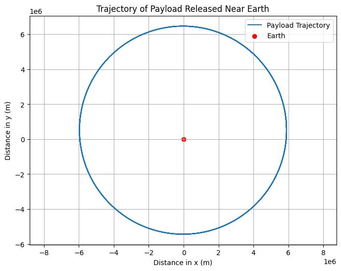

problem 3
Task 1: Analyze the Possible Trajectories of a Payload Released Near Earth
When a payload is released near Earth from a moving rocket, its trajectory depends on various factors, including the initial conditions of the rocket and the gravitational forces acting on the object. These trajectories can be categorized as:
-
Parabolic Trajectory: The object follows a curved path due to the combination of its initial velocity and the gravitational pull of the Earth. This trajectory occurs when the object’s speed is just below the escape velocity.
-
Hyperbolic Trajectory: This trajectory occurs when the object’s speed is greater than the escape velocity, causing it to leave Earth’s gravitational influence.
-
Elliptical Trajectory: If the object's speed is less than the escape velocity but greater than the velocity for a circular orbit, it will follow an elliptical trajectory around Earth, with Earth located at one of the foci of the ellipse.
Mathematical Model
Newton's Law of Gravitation
The force of gravity between two objects (e.g., Earth and the payload) is given by:
Where: - \(F\) is the gravitational force, - \(G\) is the gravitational constant (\(6.67430 \times 10^{-11} \, \text{m}^3 \, \text{kg}^{-1} \, \text{s}^{-2}\)), - \(M\) is the mass of Earth (\(5.972 \times 10^{24} \, \text{kg}\)), - \(m\) is the mass of the payload, - \(r\) is the distance between the centers of the two masses.
Orbital Mechanics
We can describe the motion of an object near Earth using the vis-viva equation, which provides the speed of an object in orbit at a given distance from the center of the Earth:
Where: - \(v(r)\) is the velocity of the object at distance \(r\), - \(G\) is the gravitational constant, - \(M\) is the mass of Earth, - \(a\) is the semi-major axis of the orbit (the average of the periapsis and apoapsis distances).
For each type of trajectory, the value of the semi-major axis \(a\) and the velocity at a given distance will determine the path of the object.
Types of Trajectories
-
Parabolic Trajectory: The total mechanical energy is zero, i.e., \(E = 0\). $$ E = \frac{1}{2}mv^2 - \frac{GMm}{r} = 0 $$
-
Hyperbolic Trajectory: The total mechanical energy is positive, i.e., \(E > 0\). $$ E = \frac{1}{2}mv^2 - \frac{GMm}{r} > 0 $$
-
Elliptical Trajectory: The total mechanical energy is negative, i.e., \(E < 0\). $$ E = \frac{1}{2}mv^2 - \frac{GMm}{r} < 0 $$
Numerical Simulation Approach
You can use numerical methods to simulate the payload’s motion and visualize the different types of trajectories. For example, using Python and libraries like matplotlib for visualization and scipy.integrate for solving the equations of motion.
Task 2: Perform a Numerical Analysis to Compute the Path of the Payload
In this task, we will perform a numerical analysis to compute the path of the payload based on given initial conditions, including position, velocity, and altitude. The goal is to simulate the trajectory of the object under the influence of Earth's gravitational force.
Assumptions and Initial Conditions
For the numerical analysis, we need to assume some initial conditions. These include: - Initial position: The initial distance from the Earth's center (altitude + Earth's radius). - Initial velocity: The initial speed and direction of the payload. - Altitude: The height above the Earth's surface from which the payload is released.
We will also assume the Earth is a perfect sphere and the gravitational force is central and acts radially.
Governing Equations
The equations governing the motion of the payload under gravitational attraction can be derived from Newton's second law and Newton's law of gravitation. The position vector \(\vec{r}(t)\) evolves according to the following differential equations:
Where: - \(G\) is the gravitational constant, - \(M\) is the mass of the Earth, - \(r\) is the radial distance from the center of the Earth, - \(\hat{r}\) is the unit vector in the direction of the position.
We will solve these equations numerically using methods like Euler’s method or Runge-Kutta.
Numerical Solution Approach
We will discretize time into small steps and use numerical integration to calculate the position and velocity of the payload at each time step. We'll use Python and the scipy.integrate library to solve the system of equations.

## Task 3 : 1. Orbital Insertion (Elliptical Orbit)
To achieve orbital insertion, a spacecraft must have the right velocity to enter an elliptical orbit around a celestial body. The velocity required for an elliptical orbit can be calculated using the orbital velocity formula:
Orbital Velocity (for an elliptical trajectory):
Where: - \( v \) is the orbital velocity (m/s), - \( G \) is the gravitational constant (\( 6.67430 \times 10^{-11} \, \text{m}^3 \, \text{kg}^{-1} \, \text{s}^{-2} \)), - \( M \) is the mass of the central body (e.g., Earth), - \( r \) is the orbital radius (m), which is the distance from the center of the celestial body.
For circular orbits, the velocity must be adjusted to maintain a stable orbit, typically at the apogee for circularization.
2. Reentry (Parabolic Trajectory)
During reentry, a spacecraft follows a parabolic trajectory that brings it back into the atmosphere. The reentry velocity can be approximated using the escape velocity formula for the surface of the Earth.
Escape Velocity (for reentry trajectories):
Where: - \( v_{\text{escape}} \) is the escape velocity (m/s), - \( G \) is the gravitational constant, - \( M \) is the mass of the Earth (or another celestial body), - \( r \) is the distance from the center of the Earth (radius of Earth).
The object must be slowed down enough to enter a predictable and controlled parabolic trajectory as it re-enters the atmosphere.
3. Escape (Hyperbolic Trajectory)
To escape a celestial body’s gravity, an object must be launched at a velocity greater than the escape velocity, which allows it to follow a hyperbolic trajectory.
Escape Velocity (for escaping Earth's gravity):
Where: - \( v_{\text{escape}} \) is the escape velocity (m/s), - \( G \) is the gravitational constant, - \( M \) is the mass of the celestial body (e.g., Earth), - \( r \) is the distance from the center of the celestial body (m), which is the altitude at which the object is located.
If the object is launched with a velocity higher than this value, it will follow a hyperbolic trajectory, escaping the gravitational pull of the celestial body.
Summary of Relevant Formulas:
-
Orbital Velocity (Elliptical Trajectory):
[ v = \sqrt{\frac{G M}{r}} ] -
Escape Velocity (Reentry & Escape):
[ v_{\text{escape}} = \sqrt{\frac{2 G M}{r}} ]
Task 4: Develop a Computational Tool to Simulate and Visualize the Motion of the Payload Under Earth's Gravity
In this task, we will develop a computational tool to simulate and visualize the motion of the payload under Earth's gravity, accounting for initial velocities and directions. The goal is to create a Python tool that can be used to simulate the trajectory of a payload released from a rocket, with the ability to modify initial conditions (position, velocity, and direction).
Approach and Tools
To simulate the motion of the payload, we will: 1. Define initial conditions for the position, velocity, and angle of release. 2. Use numerical methods (such as Euler’s method or the Runge-Kutta method) to solve the equations of motion. 3. Visualize the trajectory using matplotlib to plot the path of the payload.
Governing Equations
As discussed in previous tasks, the motion of the payload is governed by Newton's law of gravitation. The position and velocity are updated over time according to:
Where: - \(\vec{r}\) is the position vector, - \(r\) is the radial distance from Earth’s center, - \(G\) is the gravitational constant, - \(M\) is the mass of Earth, - \(\hat{r}\) is the unit vector in the radial direction.
Key Components of the Tool
The tool will include the following features: - Initial Conditions Input: The user can specify the altitude, velocity, and direction of the payload. - Numerical Integration: The equations of motion will be solved using numerical methods like the Runge-Kutta method for more accurate results. - Visualization: A graphical representation of the trajectory will be displayed, showing the path of the payload as it moves under Earth's gravity.
